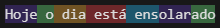

Tokenização
Da mesma forma que nós seres humanos, lemos e compreendemos palavras para interpretar um texto, com modelos de linguagem não seria diferente, eles também precisam de uma forma de "ler" o que escrevemos. A diferença está na forma de como isso é feito, em vez de palavras esses modelos usam "tokens".
E para falar sobre Tokenização utilizarei como referência os modelos da OpenAI.
Como dito anteriormente os modelos não leem textos como nos humanos, em vez disso eles leem em blocos chamados "token". Token é a unidade básica de um modelo de linguagem. Ele pode ser uma palavra, parte de uma palavra, espaço ou símbolo.
Para melhor entendimento no próprio site da OpenAI é disponibilizado uma ferramenta para entender como um trecho de texto pode ser tokenizado por um modelo de linguagem, utilizarei como exemplo a frase "Hoje o dia está ensolarado" é dividida em 7 tokens:
Esse processo de quebrar o texto em tokens é chamado de Tokenização.
Para o GPT-4, um token geralmente corresponde a cerca de 4 caracteres de texto em inglês comum, isso é aproximadamente 3/4 de uma palavra (ou seja, 100 tokens ≈ 75 palavras).
Os modelos possuem limites de tokens, no GPT-4 por exemplo o limite é de 8192 tokens, então se você mandar um texto com 5000 tokens como prompt ele poderá gerar como resposta até 3192 tokens.
Resumidamente o conjunto de todos os tokens com os quais um modelo pode trabalhar é o seu vocabulário. O tamanho do vocabulário do GPT-4 é 100.256 enquanto do Mixtral 8x7B é 32.000. Isso significa que quando um modelo de vocabulário menor vai realizar a tokenização ele tende a dividir mais o texto em partes menores, em comparação com um modelo que possui um vocabulário maior.
Um ponto em que eu sempre tive dúvida foi porque não usar palavras para separação em vez de tokens, no livro IA Engineer da Chip Huyen ela trás 3 motivos principais:
1. Comparado as palavras, os tokens permitem que o modelo divida palavras em componentes significativos. Por exemplo "cooking" pode ser divido em "cook" e "ing", com ambos carregando algum significado da palavra original.
2. Como há menos tokens exclusivos do que palavras exclusivas, isso reduz o tamanho do vocabulário do modelo, tornando-o mais eficiente.
3. Tokens também ajudam o modelo a processar palavras desconhecidas. Por exemplo uma palavra inventada como "chatgpting" pode ser divida em "chatgpt" e "ing", ajudando o modelo a entender sua estrutura.